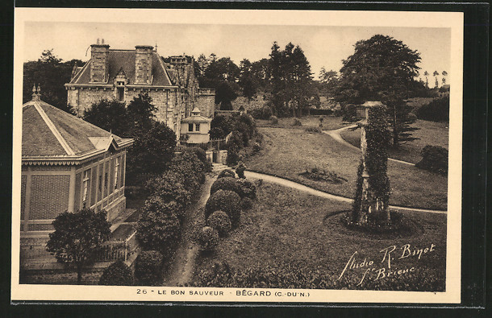
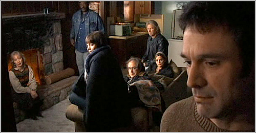

On Making a Living
Indeed, I am now an employee. Officially a young and dynamic professional in a small company located near Paris, a service provider for many public and private organizations. Yes, I do not hold an engineering degree nor any other 5-year-level diploma, still I am “Integration Engineer” on my (trial period) contract, despite my only having a 2-year CS degree (French DUT Informatique).
Do you even need a 5-year degree to work? Isn’t studying such a passionating, enthralling period of growth? After all, what are we doing with our lives—and I with my own?
My twenty-fifth birthday’s just passed, a mere three days ago, and from a place of deep knowledge and experience of this quarter century (hoho), what wisdom do I have to offer?
I think: none.
However, I have learned at least two things, two phrases, true epiphanies, them not being slow and mild tidbits, but actual sequences of words, to be written somewhere (here) as a remembrance.
The first one’s context was a little… dark maybe, or not really dark, let’s say I had gotten lost. A lady told me:
“Sometimes one needs their whole life to figure out what one wants to do with their life.”

Bon Sauveur Foundation in Bégard, Brittany, France
That was the prime shock. After I heard this, three years ago (I believe), I was firstly shaken: I may never know what to dedicate my own existence to, or the precise steps to undertake, or my profession, or my studies. Did I want to pursue a career in education, research, programming, languages, or toss it all away and become a pottery craftsman? (Pottery’s badass.)
Then later, it became quieter and I understood that actually, hmm, well indecision is normal. Not normal meaning statistically common, normal meaning healthy.
We might just not be evolved enough to enact all of our life choices with confidence, or we might just be making progress through trial and error.
But, since it can take a lifetime to figure out your life’s purpose, it’s not that big a deal if you don’t know now. Attempt, fail, change your mind. Do not stay put.
Do not stay put because, okay, staying put for too long will kill you. But that’s not necessarily the worst that can happen. Actually yes, it’s very bad, but having been lost myself, the worst thing then is not to die, it’s to suffer. And I believe you can only not suffer when you move forward.
Then, after getting my position as an engineer, a veil of opinions lifted from the workplace: I thought it would be rigorous, severe, with a demanding manager but you are only working a bullshit job.
In reality, I like my job, it is concrete, and useful. But above all:
“Life, it’s people doing stuff.”

Movie: The Man From Earth
No fancy magical recipe, I was lucky to escape corporate, my manager and colleagues are cool, clients on the phone are not tyrannical, working from home is chill and not overly controlled. There are negatives too, such as finances and Paris’ crowded trains. What matters here is it is not strict to the point of being dehumanizing. No right or wrong answer.
But above all, I learn on the go, and I become more and more confident when I have to assert: I don’t know.
We pressure ourselves to be operational, to be good enough, to be knowledgeable, to be prepared, but we’re not astronauts! They, space people, are truly humanity’s elite, they speak multiple languages, are brilliant scientists, ranking military, socially and psychologically true and stable. I am not the smartest, not the strongest, not really neurotypical.
Astronauts are an awfully tiny minority. There is barely anyone that could replace them, because almost no one has all these qualities.
And now, let’s attack school.
I mean, I’ll just speak my mind, express my feelings and my limitations when it comes to the education system.
In school, through university, you do homework in the evening. You work on such and such project on the weekend. And that’s bold text for a reason: one of the reasons why I did not end up an engineer, is that out of class, I have no will to study.
Study outside of class, force yourself to do homework, that was for me a form of identification to my studies, when no, certainly not, I refuse. I do not want to merely be a student, nor merely an employee by the way. Having to make an effort with any set time for relief, all the time, only thinking of class, I could not bare it. As a student, I had no life. (And I almost died of it.)
M’yeah. The good thing about work, is that once the day is over, it’s over.
In a nutshell: we don’t know what we’re doing with our lives, we just do stuff, school almost commited me to suicide. After all this, I still have a two or three things to append.
First off, frankly not everyone needs to study 5 or more years. Or even better, companies should quit taking in only students with high degrees for mere prestige. As a programmer, I am more self-taught than I learned in school, engineering would have allowed me a few hundred euros more per month. But this so-called engineer’s wage, it must be reachable by experience, with—in my opinion—more merit than by education.
Second, those who do not have a job, living on wellfare from the government, are not horrible leeches onto honest folk. Startup creators living on credit, non-profit volunteers upsetting otherwise dull towns, people using their time to feed a creative passion, to learn, are these people guilty because, sure, they do not support themselves financially? Really, is money the universal measure for worth? You just need to compare the billions of Jeff Bezos (Amazon) with the millions of Jimmy Wales (Wikipedia), to know the answer.
By the way, I am now a monthly donator to Wikimedia Foundation (4€ per month), because it is useful and I benefit from it on a daily basis. Think about it.
To close this rant, I would like to turn down work as a moral value, this idea stating the person not working their thirty-five weekly hours is not worthy of respect, because deprssion is in your head, and that for studies, you have to just suck it up and keep your head down for a few years in order to have a better situation later on, etc.
Depression is actually in your head, that’s why it’s treated by psychiatrists.
As for keeping your head down for a few years, it sounds like a very bad idea to me, getting used to suffering and unhappiness today for an always hypothetical future.
Think, not too much, make an effort to be kind, because kindness is underrated. Also, keep on doing stuff.
And you, how is your magic?